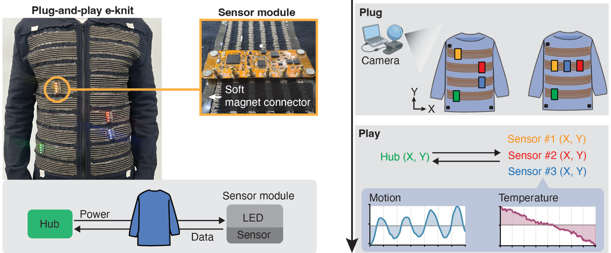
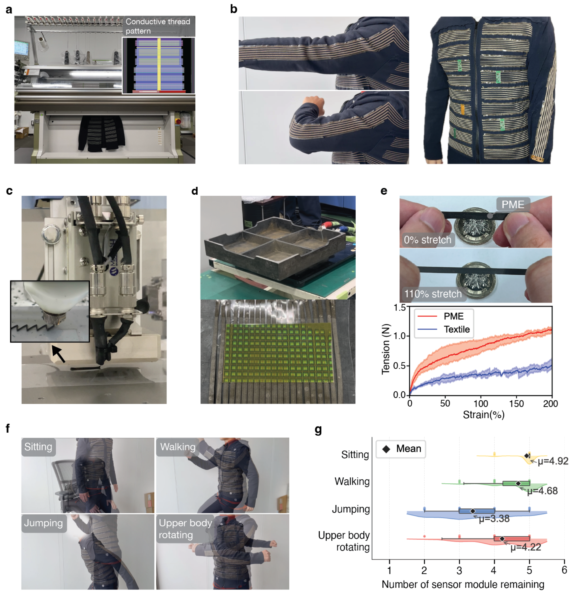
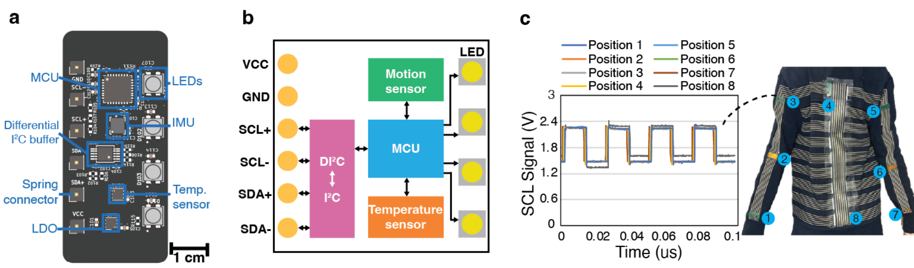
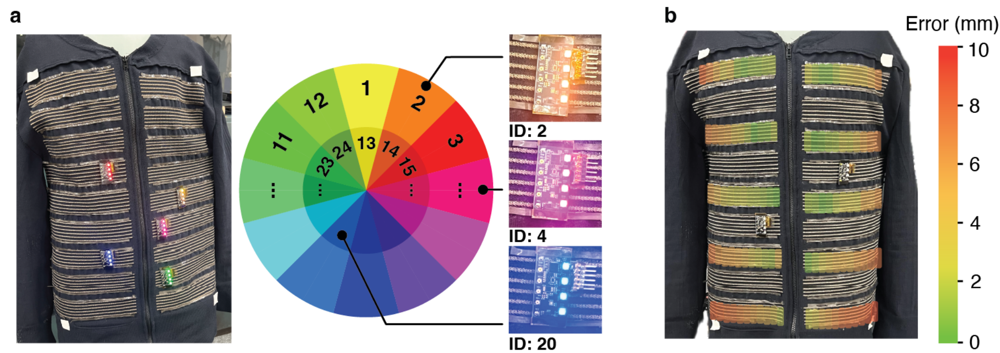
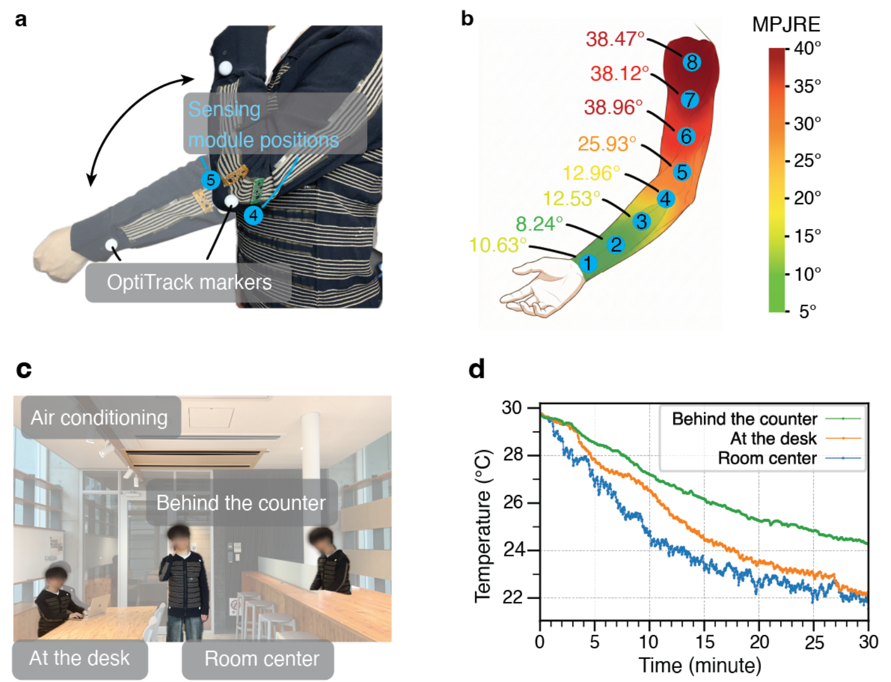

FIG. 01
把衣服变成可移动节点的供电与数据底板

将供电和通信总线编进衣服，用磁吸与弹簧针连接可拆模块，再用外部相机登记位置：这篇论文把“传感器应该放哪里”变成可快速试验的问题。
版本范围：本页依据用户指定 arXiv v1。作者团队网页另列出标题有所调整的 IEEE IROS (2026) 条目；本次未核查正式会议论文全文，因此书目与数值以此预印本为准。作者团队发表列表。五张图均由指定 PDF 高清裁切，图文冲突单独标注。
它解决的不是如何发明一种新传感器，而是怎样让电子织物上的传感器反复拆装、改变布局，并保留供电、通信与位置标签。核心贡献是机器针织布线、可拉伸永久磁体弹性体连接、差分 I²C 和视觉定位的组合。





成立的主张：一件实物服装可以整合大面积导电网络、可移动模块和视觉位置登记，并完成两个应用演示。这是制造、连接和系统接口层面的工程贡献，未提出新的传感物理原理或学习算法。
表 1 的位置：作者将本方案与 Modular E-textile、Plug-n-play Wearables、I²We 对照，报告躯干覆盖 >70%、可用节点 >20。表中各论文条件不同，本次未复核这些先前工作的原始数据；它是作者整理的横向定位，不是同条件胜出实验。特别是现有工作已包含模块化和可重定位思路，不能把“可拆传感器”本身称为首次提出。
可以借鉴“固定公共基础设施＋可移动感知节点＋位置标签”的实验组织方式：先扫描布点，再固定最终布局。对于轻质柔性结构，务必把节点质量、连接保持力和局部刚度一起计入设计。
这是本页的迁移判断：若用于扑翼或高频振动，现有 1 g 模块、磁条质量与跳跃脱落结果都不足以支持可用性，需要独立测量惯性载荷、形变和连接可靠性。
可穿戴传感器的位置会影响测量，但传统缝线使换位置很麻烦。作者把公共线路编进衣服，模块用软磁条固定、弹簧针接触线路，再由相机读取 LED 身份和位置。
五张图依次证明架构能搭起、材料能制造、信号能穿过长织物线路、视觉能登记节点，最后用八个手臂位置比较和三处温度记录说明用途。最有说服力的是快速调整布局的完整路径。
要保留三个边界：跳跃仍会断连；24 个颜色身份不是百节点整机验证；温度图例与正文有冲突。它是一套值得继续完善的电子织物原型平台。